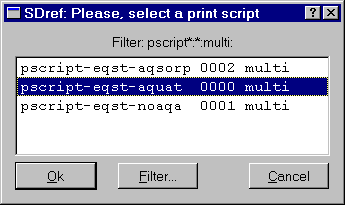

Previous Page Back to Start Page
(15)
Detailed results of the calculation of equilibrium can be seen in the
"EqDemo" window, which can be opened by clicking the "Detailed
results"  toolbar button on the "Single Thermodynamic System"
dialog.
toolbar button on the "Single Thermodynamic System"
dialog.
The
"EqIC" page (below) presents the GEM IPM dual solution vector u
; logarithms of total dissolved element concentrations in aqueous
electrolyte lgm_t (and those molal concentrations m_t
); the mass balance residuals Cb ; and (for
convenience) the input bulk composition vector b .

The
"EqPh" page (below) displays the list of phases and their total
mole quantities at equilibrium Xa (both also seen
in the "Results" tree on the Single Thermodynamic system dialog).
In
addition, calculated volumes phVol and
masses phM of phases are shown, as well as
Karpov's
phase stability criteria Fa . Values of Fa
close to zero show that respective phases are stable, whereas Fa
= -0.282 for Aragonite shows that this "phantom" phase is unstable and
should not be considered as present at the equilibrium state.

The
"EqDC" page (below) shows the detailed speciation: the list
of names of species (Dependent Components); their mole quantities at
equilibrium x - the GEMS IPM primal solution;
decimal logarithms of activities (fugacities) of species lga
; activity coefficients gamma ; and molality
concentrations my relative to 1 kg of
water-solvent.
These
data can also be seen in the "Results" tree on the Single
Thermodynamic system dialog, if entries for phases are expanded. Note
that in the EqDC page, the species are listed in the order of phases,
but phases are not shown on this page.

(16) To make a printout
of GEM IPM results into an ASCII text file, just click on a
"Print"  toolbar button on the "Single Thermodynamic System"
dialog. The program will then ask you to choose an appropriate
printing script:
toolbar button on the "Single Thermodynamic System"
dialog. The program will then ask you to choose an appropriate
printing script:

Select one in the middle and press the "Ok" button.
Next, you will be asked to select a directory and provide a (new) file
name:
Press "Save" to create the
printout file.
If you are curious how the
printing script looks like, select a Help->Scripts menu, change
the filter to "pscript:*.*." and find a record
"pscript-eqst-aquat:0000:multi:" in the appearing list. Double-click
on it to see the "SDref" window and select Page 2 there:
If you want a printout in other formats, or you do not want to print
some data and instead print some other data, you can save this SDref
record under another key into your project database, modify it and
select when performing future printouts.